Ebola simulation part 2: outbreak reconstruction
This practical is the second part of the response to a simulated Ebola Virus Disease (EVD) outbreak taking place in the city of Ankh, Republic of Morporkia. While the first part focussed on early assessments of transmissibility, this part explores more methodological options for estimating transmissibility, and provides an introduction to outbreak reconstruction using outbreaker2.
An update on the EVD outbreak in Ankh, Republic of Morporkia
After some rather concerning preliminary results on the new EVD outbreak in the city of Ankh, Republic of Morporkia, Public Health Morporkia (PHM) has sent you updates of the linelists and contact data. This time, PHM has also obtained Whole Genome Sequences (WGS) of the Ebola virus isolated in patients. As before, you are asked to assess the situation and produce evidence-based recommendations for informing the response.
Required packages
The following packages, available on CRAN, are needed for this practical:
xlsxto read.xlsxfilesggplot2for graphicsincidencefor epicurvesepicontactsfor contact data visualisationEpiEstimfor time-varying reproduction number estimationdistcreteto obtain discrete time delay distributionsepitrixfor some practical tricks for epidemics analysisapefor DNA sequence analysisoutbreaker2to reconstruct the outbreak
To install these packages, use install.packages, e.g.:
install.packages("xlsx")
install.packages("ggplot2")
install.packages("incidence")
install.packages("epicontacts")
install.packages("EpiEstim")
install.packages("distcrete")
install.packages("epitrix")
install.packages("ape")
install.packages("outbreaker2")
The new data
The data update includes new linelists and contact lists:
PHM-EVD-linelist-2017-11-25.xlsx: a linelist containing case information up to the 25th November 2017
PHM-EVD-contacts-2017-11-25.xlsx: a list of contacts reported between cases up to the 25th November, where
fromindicates a potential source of infection, andtothe recipient of the contact.
To read into R, download these files and use the function read.xlsx()
from the xlsx package to import the data. Each import will create a
data.frame. Call the first one linelist, and the second one
contacts. For instance, your first command line could look like:
linelist <- xlsx::read.xlsx("PHM-EVD-linelist-2017-11-25.xlsx",
sheetIndex = 1, stringsAsFactors = FALSE)
Once imported, the data should look like:
## linelist: one line per case
head(linelist)
## case_id onset sex age
## 1 39e9dc 2017-10-10 female 62
## 2 664549 2017-10-16 male 28
## 3 b4d8aa 2017-10-17 male 54
## 4 51883d 2017-10-18 male 57
## 5 947e40 2017-10-20 female 23
## 6 9aa197 2017-10-20 female 66
## contacts: pairs of cases with reported contacts
head(contacts)
## from to
## 1 9aa197 426b6d
## 2 39e9dc a8e9d8
## 3 c2a389 95fc1d
## 4 51883d 778316
## 5 51883d e37897
## 6 933811 99abbe
Analysis of epidemiological data
Visualising contact data
After the initial stage of the outbreak, contact tracing has been
maintained but started being sparser, and exposures haven’t been
reported for all cases. Despite these limitations, contacts are still a
valuable source of information. Using the function make_epicontacts in
the epicontacts package, create a new epicontacts object called x,
specifying that contacts are directed. When plotting the data, use the
arguments node_shape and shapes (see ?vis_epicontacts) to
distinguish males and females. For a list of available symbols and
corresponding shape code, you can type epicontacts::codeawesome.
The results should look like:
##
## /// Epidemiological Contacts //
##
## // class: epicontacts
## // 50 cases in linelist; 36 contacts; directed
##
## // linelist
##
## # A tibble: 50 x 4
## id onset sex age
## * <chr> <date> <chr> <dbl>
## 1 39e9dc 2017-10-10 female 62.
## 2 664549 2017-10-16 male 28.
## 3 b4d8aa 2017-10-17 male 54.
## 4 51883d 2017-10-18 male 57.
## 5 947e40 2017-10-20 female 23.
## 6 9aa197 2017-10-20 female 66.
## 7 e4b0a2 2017-10-21 female 13.
## 8 af0ac0 2017-10-21 male 10.
## 9 185911 2017-10-21 female 34.
## 10 601d2e 2017-10-22 male 11.
## # ... with 40 more rows
##
## // contacts
##
## # A tibble: 36 x 2
## from to
## <chr> <chr>
## 1 9aa197 426b6d
## 2 39e9dc a8e9d8
## 3 c2a389 95fc1d
## 4 51883d 778316
## 5 51883d e37897
## 6 933811 99abbe
## 7 51883d 185911
## 8 b4d8aa e4b0a2
## 9 605322 1875e2
## 10 b4d8aa b5ad13
## # ... with 26 more rows
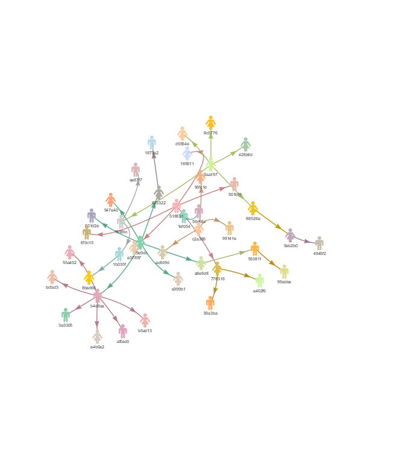
What can you say about these contacts? How would you interpret the different clusters?
Building epicurves
Using the same approach as in the first part
of the practical, use incidence (from the incidence package) to
compute and plot epicurves using dates of symptom onset. As the time
series is now longer, compare daily incidence to weekly incidence.
You should obtain something like:
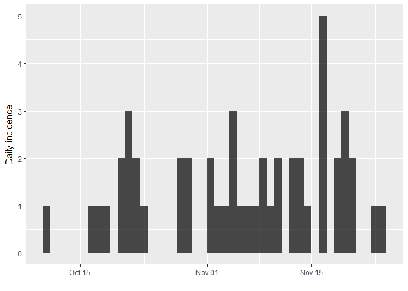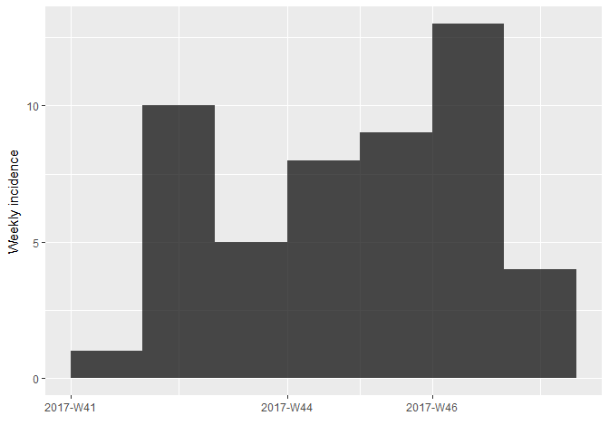
As there are no longer time intervals with ‘zero’ incidence on the
weekly epicurve, which are problematic for log-linear regression, we can
try fitting a model to these data; we do so here, with i being the
weekly incidence:
f <- fit(i)
f
## <incidence_fit object>
##
## $lm: regression of log-incidence over time
##
## $info: list containing the following items:
## $r (daily growth rate):
## [1] 0.02689489
##
## $r.conf (confidence interval):
## 2.5 % 97.5 %
## [1,] -0.03115559 0.08494537
##
## $doubling (doubling time in days):
## [1] 25.77245
##
## $doubling.conf (confidence interval):
## 2.5 % 97.5 %
## [1,] 8.159917 -22.24792
##
## $pred: data.frame of incidence predictions (7 rows, 5 columns)
plot(i, color = "#c65353", fit = f)
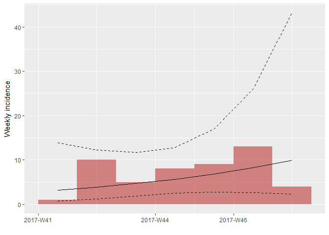
How would you interpret this result? What are the limitations of this analysis?
Estimating transmissibility
Repeating the same analysis as in the early
stage of the outbreak, we can use get_R from
the earlyR package to estimate the reproduction number:
library(earlyR)
## Warning: package 'earlyR' was built under R version 3.4.4
## parameters of the serial interval from practical part1, on the dataset
## ebola_sim_clean (outbreaks package)
mu <- 11.48 # mean serial interval
sd <- 7.38 # standard deviation
daily_i <- incidence(linelist$onset)
simple_R <- get_R(daily_i, si_mean = mu, si_sd = sd, max_R = 5)
simple_R
##
## /// Early estimate of reproduction number (R) //
## // class: earlyR, list
##
## // Maximum-Likelihood estimate of R ($R_ml):
## [1] 1.286286
##
##
## // $lambda:
## 0.04089622 0.05345593 0.06190884 0.06671221 0.06852841 0.06803361...
##
## // $dates:
## [1] "2017-10-11" "2017-10-12" "2017-10-13" "2017-10-14" "2017-10-15"
## [6] "2017-10-16"
## ...
##
## // $si (serial interval):
## A discrete distribution
## name: gamma
## parameters:
## shape: 2.41975308641975
## scale: 4.74428571428571
## R: likelihood function
plot(simple_R)
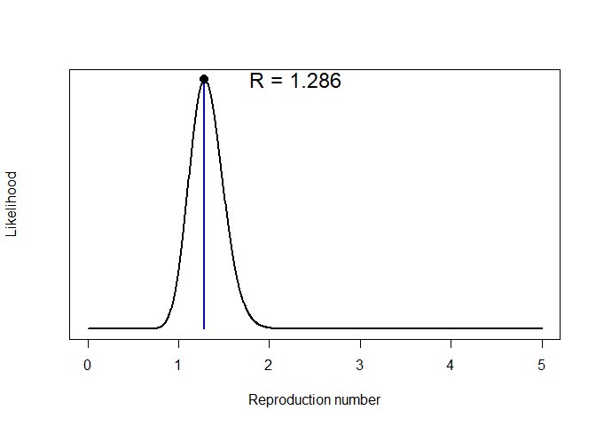
## force of infection
plot(simple_R, "lambdas")
abline(v = as.Date("2017-11-25"))
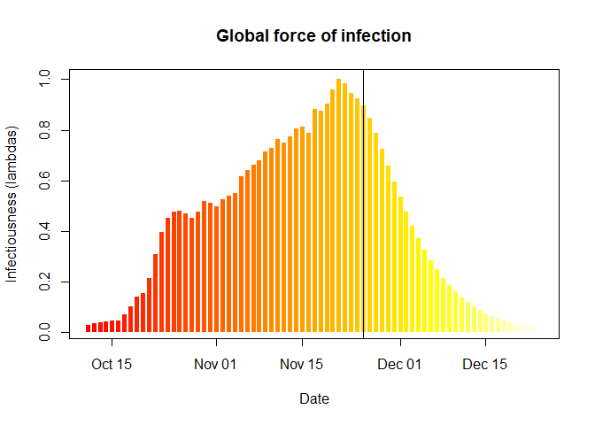
What do you make of these results?What is the main limitation of the estimation of the reproduction number (R) in this analysis? What assumption does it make about the outbreak?
Estimating time-varying transmissibility
When the assumption that R is constant over time becomes untenable, an
alternative is the estimationg of time-varying transmissibility using
the instantaneous reproduction number Rt. This approach,
introduced by Cori et al. (2013), is implemented in the package
EpiEstim (function EstimateR). It esimates Rt for a
succession of sliding time windows, using the same Poisson likelihood
described in the first part. In the following,
we use EstimateR to estimate transmissibility for 1-week sliding time
windows:
library(EpiEstim)
library(ggplot2)
days <- seq_along(daily_i$dates)
Rt <- EstimateR(as.vector(daily_i$counts), days, days + 7, method = "ParametricSI",
Mean.SI = mu, Std.SI = sd)
## Warning in EstimateR(as.vector(daily_i$counts), days, days + 7, method =
## "ParametricSI", : You're estimating R too early in the epidemic to get the
## desired posterior CV.
Rt <- Rt$R[days,]
head(Rt, 10)
## T.Start T.End Mean(R) Std(R) Quantile.0.025(R) Quantile.0.05(R)
## 1 1 8 NA NA NA NA
## 2 2 9 NA NA NA NA
## 3 3 10 NA NA NA NA
## 4 4 11 NA NA NA NA
## 5 5 12 7.760690 2.5868968 3.548682 4.048690
## 6 6 13 7.747323 2.3359057 3.867436 4.344845
## 7 7 14 6.674902 1.9268782 3.449019 3.851537
## 8 8 15 4.773032 1.4391233 2.382680 2.676806
## 9 9 16 3.437773 1.0871193 1.648546 1.865131
## 10 10 17 2.541335 0.8471116 1.162060 1.325794
## Quantile.0.25(R) Median(R) Quantile.0.75(R) Quantile.0.95(R)
## 1 NA NA NA NA
## 2 NA NA NA NA
## 3 NA NA NA NA
## 4 NA NA NA NA
## 5 5.896094 7.475227 9.314937 12.446983
## 6 6.070950 7.513862 9.169754 11.946526
## 7 5.294658 6.490432 7.854455 10.127781
## 8 3.740239 4.629200 5.649375 7.360110
## 9 2.655985 3.323885 4.095710 5.399097
## 10 1.930749 2.447856 3.050292 4.075920
## Quantile.0.975(R)
## 1 NA
## 2 NA
## 3 NA
## 4 NA
## 5 13.592581
## 6 12.952366
## 7 10.947973
## 8 7.979796
## 9 5.873368
## 10 4.451060
EpiEstim is not yet integrated with other RECON packages, so adding
the results to existing incidence plots takes some customisation using
ggplot2. Uses the following commands to add estimates of
Rr to the daily incidence:
names(Rt) <- gsub("[(]R[)]", "", names(Rt))
Rt <- cbind.data.frame(as.data.frame(daily_i),
Rt)
plot(daily_i) +
geom_ribbon(data = Rt, fill = "#c65353", alpha = .3,
aes(ymin = Quantile.0.025, ymax = Quantile.0.975)) +
geom_line(data = Rt, aes(y = Median), col = "#c65353", alpha = .8) +
geom_hline(yintercept = 1, linetype = 2) +
labs(title = "Weekly Rt: median, and 95% CI")
## Warning: Removed 11 rows containing missing values (geom_path).
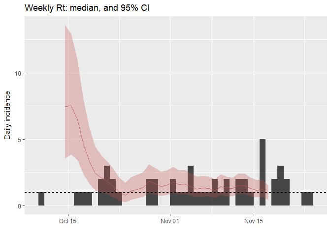
How would you interpret this result? What is the caveat of this representation?
Finding who infected whom
To gain a better understanding of the transmission process, we can
attempt to reconstruct plausible transmission trees using the dates of
symptom onsets and limited contact data. This can be achieved using
outbreaker2, which provides a modular platform for outbreak
reconstruction. This package extends and replaces outbreaker, which in
contrast was a static implementation of a specific transmission model
(Jombart et al. 2014).
Looking at Whole Genome Sequences (WGS)
WGS have been obtained for all cases in this outbreak. They are stored
as a fasta PHM-EVD-WGS.fa. Download this
file, save it in your working directory, and then import these data
using the function read.FASTA from the ape package.
library(ape)
## dna <- read.FASTA("PHM-EVD-WGS.fa")
dna
## 50 DNA sequences in binary format stored in a list.
##
## All sequences of same length: 18958
##
## Labels:
## 39e9dc
## 664549
## b4d8aa
## 51883d
## 947e40
## 9aa197
## ...
##
## Base composition:
## a c g t
## 0.250 0.248 0.248 0.254
identical(labels(dna), linelist$case_id) # check sequences match linelist data
## [1] TRUE
As a first exploration of the data, we derive a Neighbour-Joining tree rooted at the first case of the outbreak:
nj <- nj(dist.dna(dna, model = "N")) # NJ on nucleotide distances (model = "N")
nj
##
## Phylogenetic tree with 50 tips and 48 internal nodes.
##
## Tip labels:
## 39e9dc, 664549, b4d8aa, 51883d, 947e40, 9aa197, ...
##
## Unrooted; includes branch lengths.
nj <- root(nj, 1)
plot(nj, main = "Neighbour Joining tree")
axisPhylo()
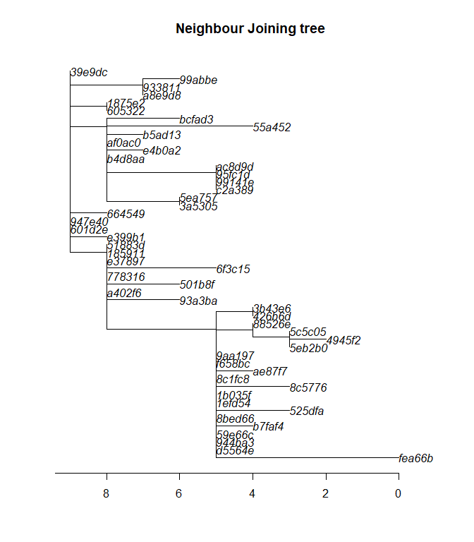
This phylogenetic tree shows the inferred evolution of the pathogen sequences. Branch length (x-axis) correspond to the number of mutations occuring between lineages (indicated by the axis at the bottom). The tree has been rooted to the index case, so that this sequence (top, left) is the “most ancient” part of the tree. Note that in such representations, distances on the y-axis are meaningless.
How would you interpret this phylogenetic tree? Many methods of outbreak reconstruction infer transmission events from phylogenies. What results would you expect here?
Building delay distributions
outbreaker2 can handle different types of dates. When dates of onset
are provided, information on the generation time (delay between
primary and secondary infections) and on the incubation period (delay
between infection and symptom onset) can be included in the model. These
delays are typically modelled as Gamma distributions, which need to be
discretised in order to account for the fact that time is reported as
days.
A possible approach here would be using estimates of the mean and
standard deviation of the incubation period and the generation time
published in the literature. From this, one would need to use epitrix
to convert these parameters into shape and scale for a Gamma
distribution, and then use distcrete to generate discretised
distributions.
Alternatively, these parameters can be estimated from a previous,
reasonably similar outbreak. PHM asks you to use the dataset
ebola_sim_clean from the outbreaks package to this end. Start by
extracting data on the inbucation period (i.e. delay from infection to
onset) and store the output in an object called incub; results should
look like:
## Warning: package 'outbreaks' was built under R version 3.4.4
incub <- with(ebola_sim_clean$linelist, date_of_onset - date_of_infection)
incub <- as.integer(na.omit(incub))
summary(incub)
## Min. 1st Qu. Median Mean 3rd Qu. Max.
## 1.00 4.00 8.00 10.08 14.00 62.00
hist(incub, col = terrain.colors(10), border = "white",
main = "Incubation period",
xlab = "Days after exposure")
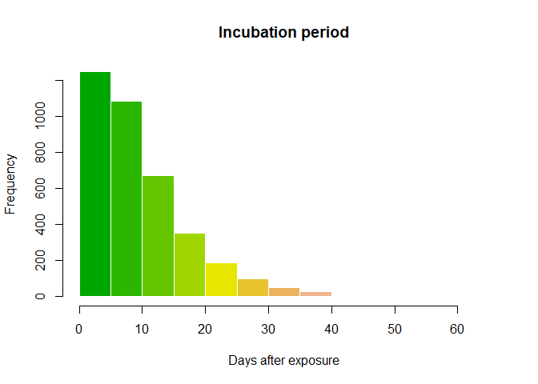
Then, use epicontacts to extract data on the generation time
(i.e. delay between infections between infectors and infectees):
ebola_sim_contacts
##
## /// Epidemiological Contacts //
##
## // class: epicontacts
## // 5,829 cases in linelist; 3,800 contacts; directed
##
## // linelist
##
## # A tibble: 5,829 x 9
## id generation date_of_infection date_of_onset date_of_hospitalisat~
## * <chr> <int> <date> <date> <date>
## 1 d1fafd 0 NA 2014-04-07 2014-04-17
## 2 53371b 1 2014-04-09 2014-04-15 2014-04-20
## 3 f5c3d8 1 2014-04-18 2014-04-21 2014-04-25
## 4 6c286a 2 NA 2014-04-27 2014-04-27
## 5 0f58c4 2 2014-04-22 2014-04-26 2014-04-29
## 6 49731d 0 2014-03-19 2014-04-25 2014-05-02
## 7 f9149b 3 NA 2014-05-03 2014-05-04
## 8 881bd4 3 2014-04-26 2014-05-01 2014-05-05
## 9 e66fa4 2 NA 2014-04-21 2014-05-06
## 10 20b688 3 NA 2014-05-05 2014-05-06
## # ... with 5,819 more rows, and 4 more variables: date_of_outcome <date>,
## # outcome <fct>, gender <fct>, hospital <fct>
##
## // contacts
##
## # A tibble: 3,800 x 3
## from to source
## * <chr> <chr> <fct>
## 1 d1fafd 53371b other
## 2 cac51e f5c3d8 funeral
## 3 f5c3d8 0f58c4 other
## 4 0f58c4 881bd4 other
## 5 8508df 40ae5f other
## 6 127d83 f547d6 funeral
## 7 f5c3d8 d58402 other
## 8 20b688 d8a13d other
## 9 2ae019 a3c8b8 other
## 10 20b688 974bc1 other
## # ... with 3,790 more rows
gen_time <- get_pairwise(ebola_sim_contacts, "date_of_infection")
gen_time <- as.integer(na.omit(gen_time))
summary(gen_time)
## Min. 1st Qu. Median Mean 3rd Qu. Max.
## 1.00 5.00 9.00 10.96 15.00 44.00
hist(gen_time, col = terrain.colors(10), border = "white",
main = "Generation time",
xlab = "Days after exposure")
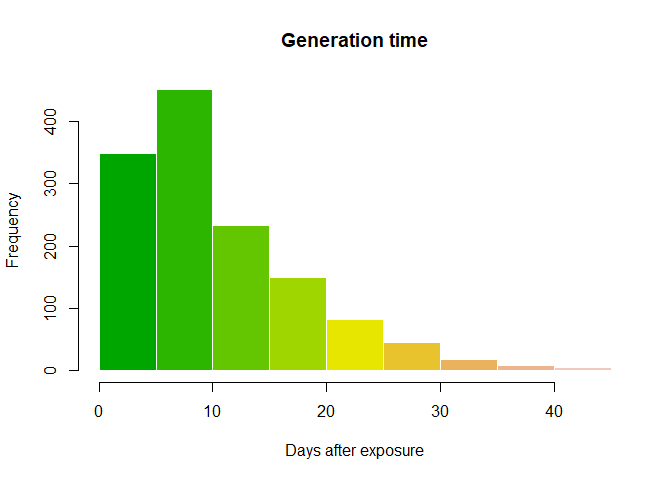
We can now fit a discretised Gamma distributions to both delays. The
function fit_dist_gamma in the package epitrix makes this fairly
simple. We illustrate the procedure for the incubation period:
library(epitrix)
incub_fit <- fit_disc_gamma(incub)
incub_fit
## $mu
## [1] 10.57505
##
## $cv
## [1] 0.7022628
##
## $sd
## [1] 7.426463
##
## $ll
## [1] -12123.24
##
## $converged
## [1] TRUE
##
## $distribution
## A discrete distribution
## name: gamma
## parameters:
## shape: 2.02768577832022
## scale: 5.21532912601657
incub_dist <- incub_fit$distribution
plot(0:50, incub_dist$d(0:50), type = "h", col = terrain.colors(51),
xlab = "Days after exposure", ylab = "Probability",
main = "Incubation period distribution", lend = 1, lwd = 8)
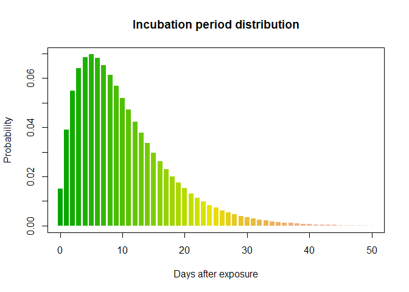
Using the same process, create a distribution for the generation time. Results should resemble:
## $mu
## [1] 11.46512
##
## $cv
## [1] 0.6379854
##
## $sd
## [1] 7.314581
##
## $ll
## [1] -4364.861
##
## $converged
## [1] TRUE
##
## $distribution
## A discrete distribution
## name: gamma
## parameters:
## shape: 2.45684936922917
## scale: 4.66659611108255
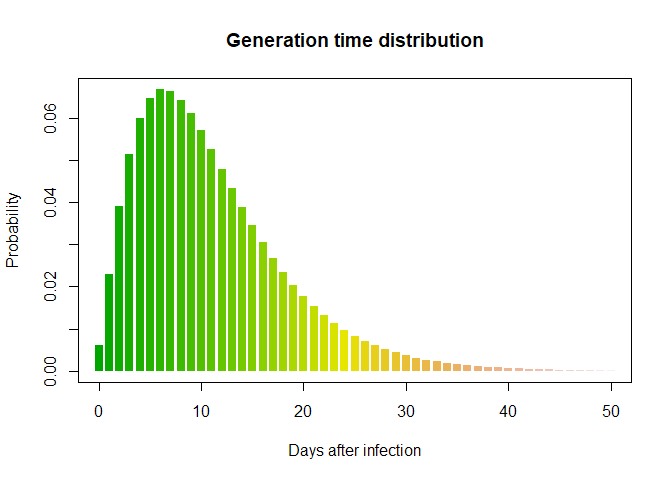
Using the original outbreaker model
The original outbreaker model combined temporal information (here,
dates of onset) with sequence data to infer who infected whom. Here, we
use outbreaker2 to apply this model to the data.
All inputs to the new outbreaker function are prepared using dedicated
functions, which make a number of checks on provided inputs and define
defaults:
library(outbreaker2)
data <- outbreaker_data(dates = linelist$onset, # dates of onset
dna = unname(dna), # WGS; remove labels for compatibility
w_dens = gen_time_dist$d(1:100), # generation time distribution
f_dens = incub_dist$d(1:100) # incubation period distribution
)
We also create a configuration, which determines different aspects of the analysis, including which parameters need to be estimated, initial values of parameters, the length of the MCMC, etc.:
config <- create_config(move_kappa = FALSE, # don't look for missing cases
move_pi = FALSE, # don't estimate reporting
init_pi = 1, # set reporting to 1
find_import = FALSE, # don't look for additional imported cases
init_tree = "star" # star-like tree as starting point
)
We can now run the analysis. This should take a couple of minutes on
modern laptops. Note the use of set.seed(0) to have identical results
across different users and computers:
set.seed(0)
res_basic <- outbreaker(data = data, config = config)
res_basic
##
##
## ///// outbreaker results ///
##
## class: outbreaker_chains data.frame
## dimensions 201 rows, 158 columns
## ancestries not shown: alpha_1 - alpha_50
## infection dates not shown: t_inf_1 - t_inf_50
## intermediate generations not shown: kappa_1 - kappa_50
##
## /// head //
## step post like prior mu pi eps lambda
## 1 1 -1979.3825 -1981.6850 2.302485 1.000000e-04 1 0.5 0.05
## 2 50 -812.2698 -814.5723 2.302543 4.244632e-05 1 0.5 0.05
## 3 100 -816.6804 -818.9829 2.302522 6.265153e-05 1 0.5 0.05
##
## ...
## /// tail //
## step post like prior mu pi eps lambda
## 199 9900 -807.7895 -810.0920 2.302535 5.039668e-05 1 0.5 0.05
## 200 9950 -810.8754 -813.1780 2.302551 3.377507e-05 1 0.5 0.05
## 201 10000 -811.5659 -813.8684 2.302522 6.311282e-05 1 0.5 0.05
plot(res_basic)
plot(res_basic, burn = 500)
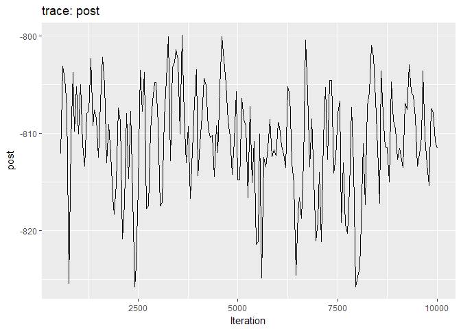
The first two plots show the trace of the log-posterior densities (with,
and without burnin). See ?plot.outbreaker_chains for details on
available plots. Graphics worth looking at include:
plot(res_basic, type = "alpha", burnin = 500) # ancestries
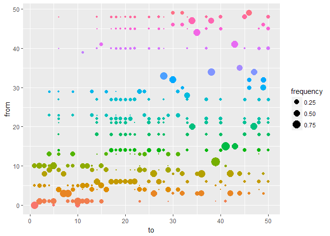
plot(res_basic, type = "t_inf", burnin = 500) # infection dates
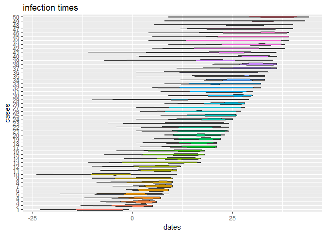
plot(res_basic, "mu", burn = 500, type = "density") # mutation rate
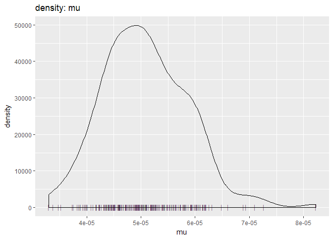
plot(res_basic, type = "network", burnin = 500, min_support = .05) # transmission trees
As a further help for interpretation, you can derive a consensus tree
from the posterior samples of trees using summary. Look in particular
at the support column, and compare the results to the contact data.
smry_basic <- summary(res_basic)
head(smry_basic$tree)
## from to time support generations
## 1 NA 1 -8 0.2537313 NA
## 2 1 2 0 0.4427861 1
## 3 8 3 2 0.3283582 1
## 4 9 4 3 0.3432836 1
## 5 10 5 0 0.5124378 NA
## 6 4 6 5 0.3383085 1
tail(smry_basic$tree)
## from to time support generations
## 45 48 45 29 0.2636816 1
## 46 49 46 31 0.3830846 1
## 47 20 47 26 0.5174129 1
## 48 21 48 27 0.1741294 1
## 49 30 49 31 0.3880597 1
## 50 48 50 34 0.1641791 1
hist(smry_basic$tree$support, col = "grey", border = "white",
main = "Consensus ancestry: support", xlim = c(0,1))
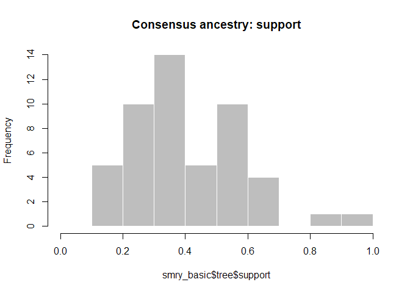
How would you interpret the results? Is this what you would have expected?
As a point of comparison, repeat the same analysis using temporal data
only, and plot a graph of ancestries (type = "alpha"); you should
obtain something along the lines of:
set.seed(0)
data <- outbreaker_data(dates = linelist$onset, # dates of onset
w_dens = gen_time_dist$d(1:100), # generation time distribution
f_dens = incub_dist$d(1:100) # incubation period distribution
)
res_time <- outbreaker(data = data, config = config)
plot(res_time, type = "alpha", burn = 500)
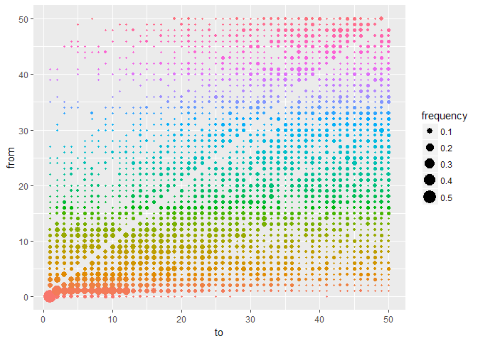
What is the usefulness of temporal and genetic data for outbreak reconstruction? What other data would you ideally include?
Adding contact data to the reconstruction process
Contact data currently contains case labels. While epicontacts objects
will soon be accepted as inputs in outbreaker2, for now we need to
operate some minor transformations to define contacts using cases
indices rather than labels:
ctd <- matrix(match(unlist(x$contacts), linelist$case_id), ncol = 2)
head(ctd)
## [,1] [,2]
## [1,] 6 28
## [2,] 1 15
## [3,] 30 46
## [4,] 4 23
## [5,] 4 13
## [6,] 41 43
dim(ctd)
## [1] 36 2
All inputs to the outbreaker function are prepared using dedicated
functions, which make a number of checks on provided inputs and define
defaults:
data <- outbreaker_data(dates = linelist$onset, # dates of onset
dna = unname(dna), # dna sequences
ctd = ctd, # contact data
w_dens = gen_time_dist$d(1:100), # generation time distribution
f_dens = incub_dist$d(1:100) # incubation period distribution
)
We are now ready to run the analysis. This may take a couple of minutes, depending on your computer:
set.seed(0)
res_full <- outbreaker(data = data, config = config)
res_full
##
##
## ///// outbreaker results ///
##
## class: outbreaker_chains data.frame
## dimensions 201 rows, 158 columns
## ancestries not shown: alpha_1 - alpha_50
## infection dates not shown: t_inf_1 - t_inf_50
## intermediate generations not shown: kappa_1 - kappa_50
##
## /// head //
## step post like prior mu pi eps
## 1 1 -2153.0273 -2155.3298 2.302485 1.000000e-04 1 0.5000000
## 2 50 -897.6124 -899.9149 2.302517 6.776465e-05 1 0.5889257
## 3 100 -861.1298 -863.4323 2.302527 5.788386e-05 1 0.7036900
## lambda
## 1 0.050000000
## 2 0.016343896
## 3 0.003869504
##
## ...
## /// tail //
## step post like prior mu pi eps
## 199 9900 -838.7367 -841.0392 2.302540 4.526663e-05 1 0.6064171
## 200 9950 -833.8983 -836.2008 2.302538 4.745629e-05 1 0.7066745
## 201 10000 -835.0767 -837.3792 2.302537 4.802969e-05 1 0.7478403
## lambda
## 199 0.0008513904
## 200 0.0008513904
## 201 0.0008513904
Produce graphics as in the previous model. Assess convergence, choose an appropriate burnin, visualise ancestries and the infection timelines:
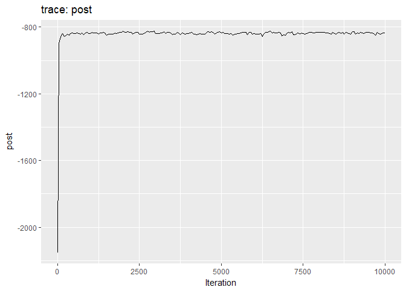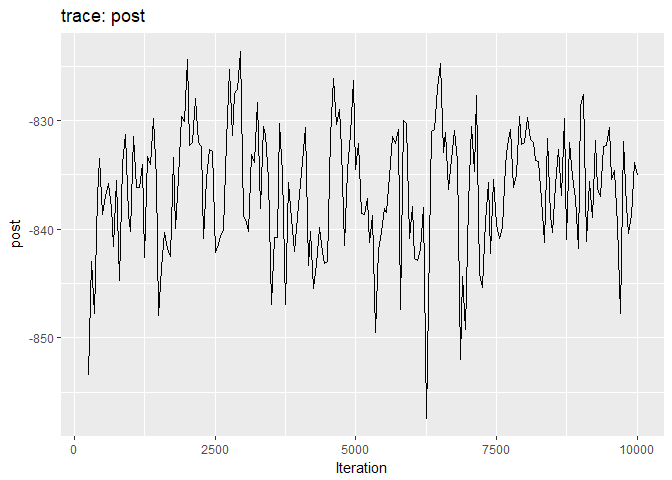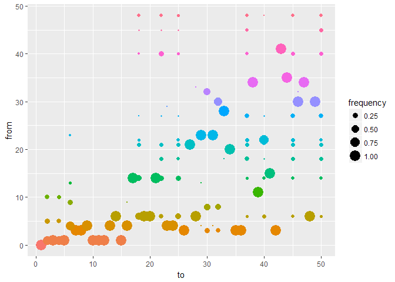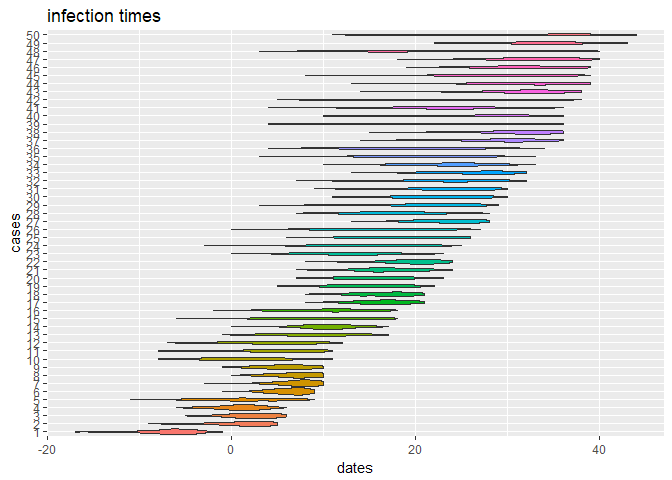
How would you interpret the results?
Derive a consensus tree using summary, and make a new epicontacts
object, using the previous linelist, to visualise the consensus tree
with meta-information:
smry_full <- summary(res_full)
head(smry_full$tree)
## from to time support generations
## 1 NA 1 -6 NA NA
## 2 1 2 2 0.6517413 1
## 3 1 3 2 1.0000000 1
## 4 1 4 1 0.7164179 1
## 5 1 5 1 0.9950249 1
## 6 4 6 6 0.6666667 1
smry_full$tree$support <- round(smry_full$tree$support, 2)
linelist$id <- 1:nrow(linelist) # add case index to linelist
cons_tree <- make_epicontacts(linelist, smry_full$tree[-1, ], id = "id",
from = 1, to = 2, directed = TRUE)
In the following, we add age class information to the linelist of
cons_tree, and create color palettes which will be used to display
information on the final graph:
library(visNetwork)
## Warning: package 'visNetwork' was built under R version 3.4.4
support_pal <- colorRampPalette(
c("#918D98", "#645877", "#423359", "#281449", "#1A0340")
)
age_pal <- colorRampPalette(
c("#3288BD", "#ABDDA4", "#FDAE61", "#D53E4F")
)
cons_tree$linelist$age_class <- cut(cons_tree$linelist$age,
breaks = c(0, 10, 20, 30, 40, 90),
labels = c("0-10", "11-20", "21-30", "31-40", "41+" ))
Looking carefully at the documentation of vis_epicontacts, try to
reproduce the final consensus tree below:
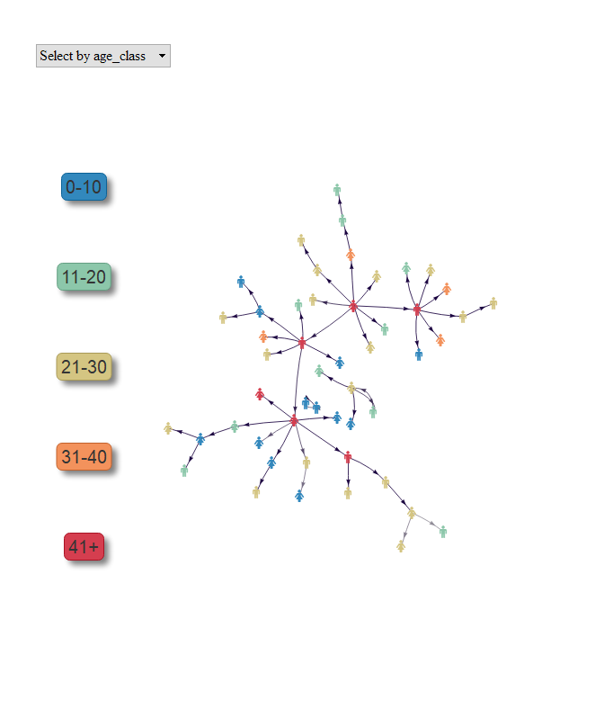
What are your conclusions? What are the main drivers of this outbreak? What recommendations would you make to further improve the response?
About this document
Contributors
- Thibaut Jombart: initial version
Contributions are welcome via pull requests. The source file is hosted on github.
Legal stuff
License: CC-BY Copyright: Thibaut Jombart, 2017
References
Cori, Anne, Neil M Ferguson, Christophe Fraser, and Simon Cauchemez. 2013. “A New Framework and Software to Estimate Time-Varying Reproduction Numbers During Epidemics.” Am. J. Epidemiol. 178 (9):1505–12.
Jombart, Thibaut, Anne Cori, Xavier Didelot, Simon Cauchemez, Christophe Fraser, and Neil Ferguson. 2014. “Bayesian Reconstruction of Disease Outbreaks by Combining Epidemiologic and Genomic Data.” PLoS Comput. Biol. 10 (1):e1003457.